프로젝트 준비: RustRover와 Cargo.toml
이 강의는 빈 폴더에서 시작해 할 일 목록 API인 taskr를 끝까지 만들어요. Axum은 Rust로 웹 서버와 API를 만드는 프레임워크예요. 강사는 Rust가 빠르면서도 코드가 돌기 전에 여러 종류의 버그를 잡아 주기 때문에, 부하가 걸려도 믿을 수 있어야 하는 백엔드에 잘 맞는다고 소개해요.
설치와 프로젝트 만들기
rustup으로 Rust를 깔면 컴파일러 rustc와 프로젝트 관리·패키지 설치 도구 cargo가 함께 들어와요. 편집기는 JetBrains의 Rust 전용 IDE(Integrated Development Environment)인 RustRover를 써요. 새 프로젝트에서 왼쪽 목록의 Rust를 고르고, 템플릿은 바이너리 애플리케이션 그대로 두고 만들어요. 그러면 src/main.rs와 Cargo.toml 두 파일이 생겨요.
아래 화면이 의존성을 다 넣은 Cargo.toml이에요. [dependencies] 아래 세 줄을 보면 돼요. 회색 숫자 0.8.9, 1.53.1, 1.0.229는 IDE가 실제로 잡은 버전을 옆에 보여 주는 표시예요.
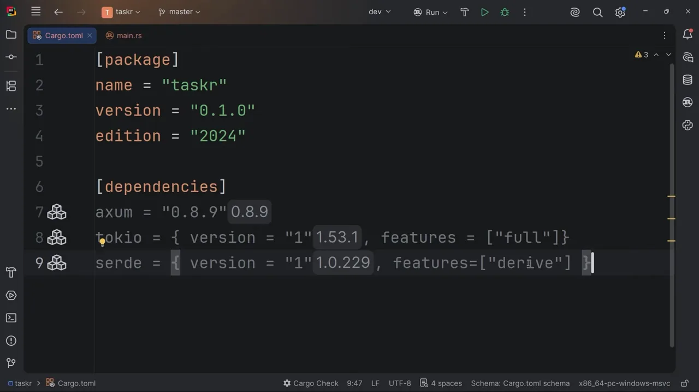
axum— URL(Uniform Resource Locator)을 코드로 연결하고, 돌려준 값을 HTTP(HyperText Transfer Protocol) 응답으로 바꿔요.tokio— 비동기 코드를 실제로 돌리는 런타임이에요. Rust에는 기본으로 들어 있지 않아서 따로 넣어요.serde— Rust 구조체와 JSON(JavaScript Object Notation)을 서로 바꿔요.derive기능을 켜면 변환 코드를 한 줄 표시로 대신해요.
tokio의 full은 기능을 전부 켜는 옵션이에요. 강사는 배우는 동안엔 고민할 필요 없는 선택이라고 해요. 이 상태로 기본 코드 Hello, world!를 실행해서 컴파일러와 의존성이 다 동작하는지 확인해요.
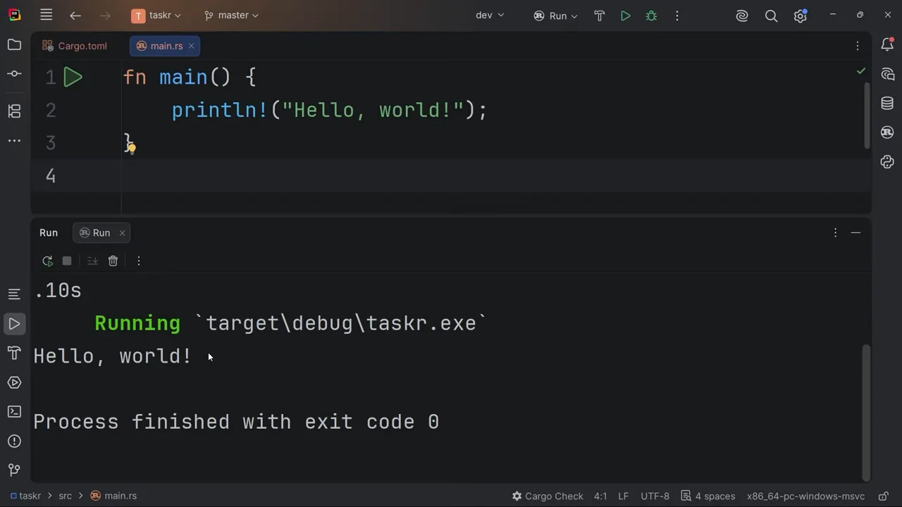
cargo를 찾을 수 없다는 오류가 나면, Rust 설치가 끝나기 전에 RustRover를 연 경우예요. IDE는 시작할 때만 PATH 환경 변수를 읽으니 완전히 껐다가 다시 열면 돼요.
구조체와 소유권
이 장은 웹과 상관없는 Rust 기초예요. 강사는 구조체, 소유권, Option과 Result, async 네 가지를 한 파일에서 한 번에 가르치고 나중에 지워요. 뒤에서 쓰는 모든 줄을 읽기 위한 어휘라서 대충 넘기지 말라고 해요. Rust를 이미 안다면 3장(첫 서버)으로 건너뛰어도 된다고 해요.
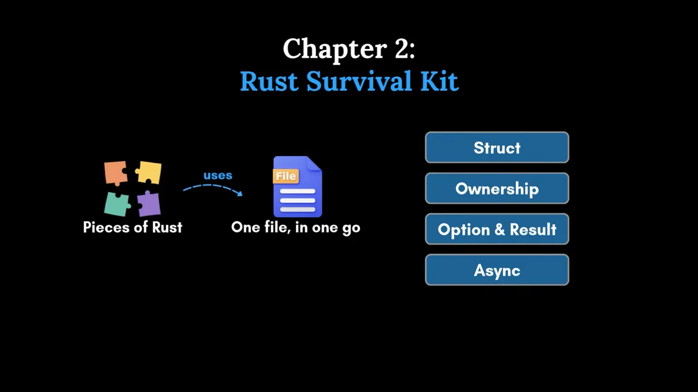
구조체: 데이터의 모양
구조체는 관련 있는 값을 한 이름으로 묶은 사용자 정의 타입이에요. Task는 필드 세 개를 가져요. id: u32는 음수가 될 수 없는 32비트 정수, title: String은 프로그램이 소유해서 늘리거나 바꿀 수 있는 문자열, done: bool은 참·거짓이에요.
값을 만들 때는 모든 필드를 채워야 해요. 함정이 하나 있어요. title: "Learn Axum"처럼 따옴표만 쓰면 이건 빌린 문자열(&str)이라 String 필드와 타입이 맞지 않아요. 끝에 .to_string()을 붙여 소유한 문자열로 바꿔야 해요. 구조체에 없는 필드를 쓰면 바로 오류가 나요.
기본은 불변, 바꾸려면 mut
할 일을 끝냈다고 first.done = true를 쓰면 "불변 바인딩의 필드에 새 값을 넣을 수 없다"는 오류가 나요. Rust의 변수는 기본적으로 바꿀 수 없어서, let mut first처럼 mut를 붙여야 해요.
출력은 println!으로 해요. 끝의 !는 함수가 아니라 매크로라는 표시예요. 문자열 안의 {} 자리에 쉼표 뒤 인자가 순서대로 들어가요. 실행하면 id 필드를 한 번도 읽지 않았다는 경고가 뜨는데, 경고일 뿐 실행은 돼요.
소유권과 빌림
강사가 "Rust에서 사람들이 겁먹는 부분"이라고 부르는 곳이에요. 규칙은 하나예요. 모든 값에는 주인이 딱 하나 있고, 값을 함수에 그냥 넘기면 소유권이 함수로 옮겨 가요. 옮겨 간 뒤에는 원래 쪽에서 그 값을 다시 쓸 수 없어요. 마지막 주인이 그 데이터를 정리할 책임을 져요. Rust가 가비지 컬렉터 없이 메모리를 관리하는 방법이 이 규칙이에요.
아래 화면이 그 상황이에요. 18번째 줄 print_title(first) 옆에 Value moved here가 붙어 있고, 19번째 줄 print_title(&first)에는 빨간 밑줄과 함께 아래 팝업에 Value used after being moved [E0382]가 떠 있어요.
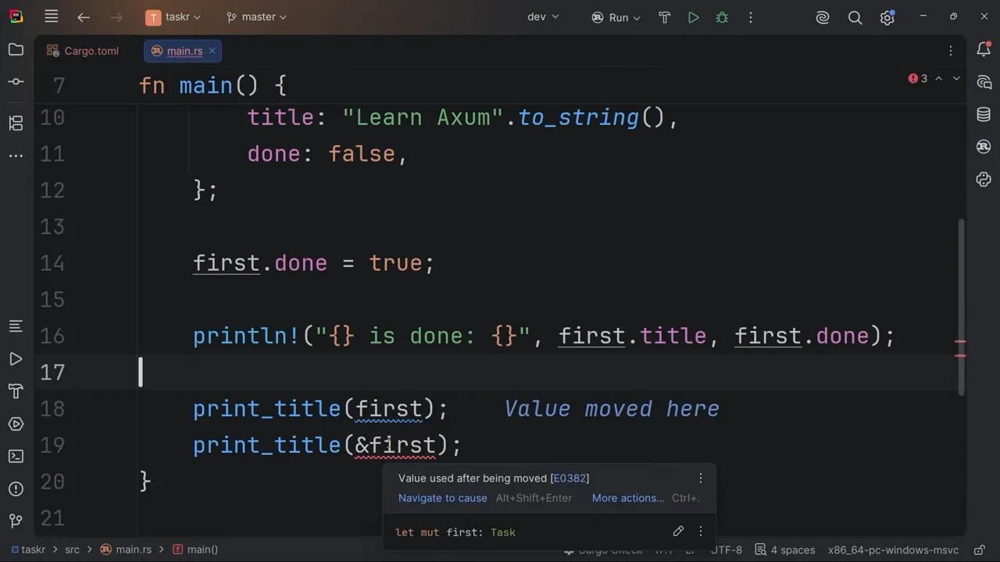
해결은 값을 넘기지 않고 빌려주는 거예요. 호출할 때 &first, 함수 쪽 매개변수도 task: &Task로 써요. 함수는 값을 들여다보기만 하고, 끝나면 자동으로 돌려줘요. 주인인 main은 그 뒤에도 계속 쓸 수 있어요.
& 한 글자예요. 강사는 뒤에 나오는 &와 Arc가 모두 "넘겨주지 않고 함께 쓰기"를 위한 도구라고 미리 짚어 둬요.Option, Result, async
강사가 "Rust에서 피할 수 없는 두 타입"이라고 부르는 Option과 Result, 그리고 서버 코드에 꼭 필요한 async를 다뤄요.
Option: null 대신
Rust에는 null이 없어요. 값이 없을 수도 있으면 Option으로 감싸요. Option은 정해진 몇 가지 중 정확히 하나인 열거형(enum)이에요. 값이 있으면 Some(...), 없으면 None이에요. 타입을 Option<String>으로 적어 놓고 그냥 문자열을 넣으면 타입이 맞지 않는다는 오류가 나요.
match는 다른 언어의 switch와 비슷한데, 가능한 경우를 하나라도 빼먹으면 컴파일을 거부해요. 화면의 23~26번째 줄이 maybe_title을 Some(t)와 None 두 갈래로 처리하는 모습이에요.
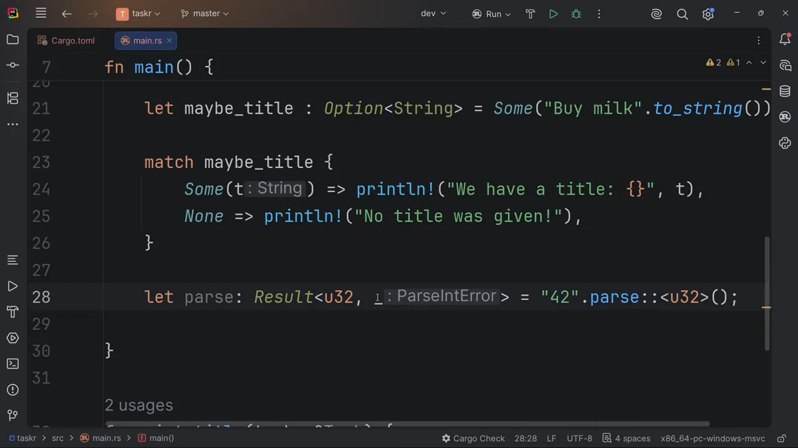
Result: 예외 대신
실패할 수 있는 작업은 Result로 같은 생각을 표현해요. "42".parse::<u32>()는 문자열을 숫자로 바꾸는데, 결과 타입이 Result<u32, ParseIntError>예요. 성공하면 Ok(n), 실패하면 Err(e)예요. Rust에는 예외도 없어서, 실패할 수 있는 함수는 그 사실을 반환 타입에 드러내요.
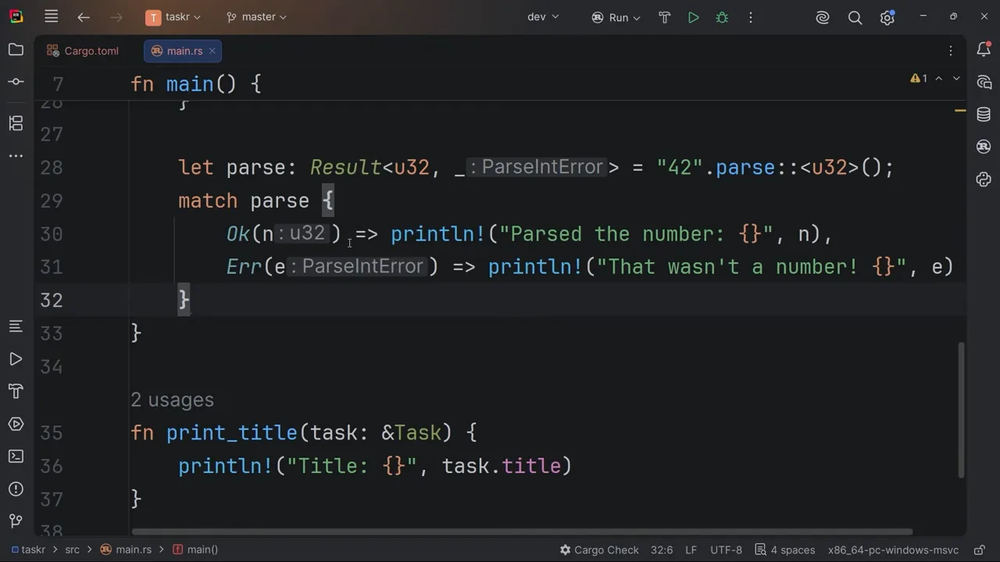
they're the reason that your API won't crash at 3:00 a.m. on a missing field.
이 두 타입 덕분에 필드 하나가 빠졌다고 새벽 3시에 API가 죽지 않아요.
— 영상 16:09
async와 await
웹 서버는 대부분의 시간을 네트워크나 데이터베이스를 기다리며 보내요. async 함수는 기다리는 지점에서 멈추고, 그동안 런타임이 다른 일을 하게 해 줘요. 서버 하나가 수천 개 연결을 동시에 감당하는 방법이에요.
중요한 점은 async 함수를 호출해도 바로 실행되지 않는다는 거예요. 호출은 해야 할 일의 설명서인 Future를 만들 뿐이고, .await를 붙여야 끝까지 실행돼요. 아래 화면은 .await 없이 slow_hello()를 부른 상태예요. 7번째 줄의 타입 힌트가 String이 아니라 impl Future<Output=String>이고, 8번째 줄 println!에는 Future가 Display를 구현하지 않는다는 오류가 떠 있어요.
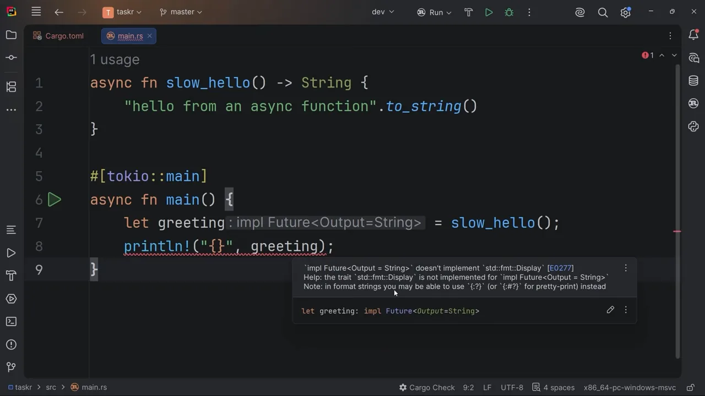
.await를 붙이면 greeting이 진짜 문자열이 되고 오류가 사라져요.
영상 19:10에서 보기
main 위의 #[tokio::main]은 속성(attribute)이에요. main을 다시 써서 Tokio 런타임을 띄우고 그 안에서 async 코드를 돌려요. 이 한 줄이 있어야 main에 async를 붙일 수 있어요.
강사는 이 장이 가장 길고, 사람들이 가장 많이 포기하는 곳이라고 해요. 지금 다 이해되지 않아도 괜찮다고 해요. 여기 나온 개념은 10분 안에 다시 쓰이기 때문이에요.
첫 서버와 라우팅
이 장의 목표는 내 컴퓨터에서 진짜 HTTP 서버를 띄우고, 브라우저로 Rust 코드가 보낸 응답을 받는 거예요. 강사는 영상에서 가장 짧지만 가장 크게 도약하는 장이라고 해요. 코드는 11줄이에요.
서버 11줄
맨 위 use axum::{routing::get, Router};는 이름을 가져와서 axum::Router 대신 Router라고 쓰게 해 줘요. Router는 어느 URL이 어느 코드로 가는지 적은 지도이고, get은 그 경로가 HTTP GET 요청에 답한다는 표시예요.
아래 화면에서 세 부분을 보면 돼요. 9~10번째 줄이 포트를 잡는 TcpListener::bind, 12번째 줄이 성공했을 때만 찍히는 안내 문구, 14번째 줄이 서버를 돌리는 axum::serve예요.
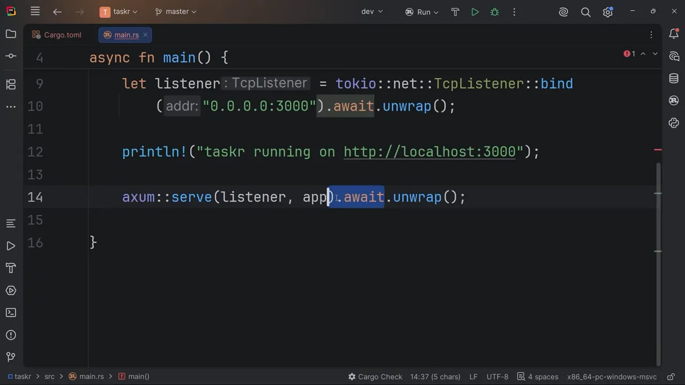
TcpListener::bind("0.0.0.0:3000")— 운영체제에 3000번 포트를 달라고 하고 연결을 기다려요.0.0.0.0은 내부든 외부든 어디서 오는 요청이든 받겠다는 뜻이에요. 포트를 잡는 데 시간이 걸릴 수 있어서.await를 붙여요..unwrap()— 실패하면 그 자리에서 오류와 함께 죽으라는 뜻이에요. 배울 때만 괜찮고, 나중엔 제대로 된 오류 처리로 바꿔야 해요.axum::serve(listener, app)— 연결을 받고, URL에 맞는 함수를 부르고, 응답을 돌려보내는 일을 계속 반복해요. 서버를 멈추기 전까지.await가 끝나지 않아요.
핸들러는 그냥 async 함수예요
라우터가 /에 연결한 root는 평범한 async 함수예요. 처음엔 반환 타입이 없어 타입 불일치 오류가 나고, &'static str을 적어 주면 사라져요. 프로그램에 박혀 있는 빌린 문자열이라는 뜻이에요.
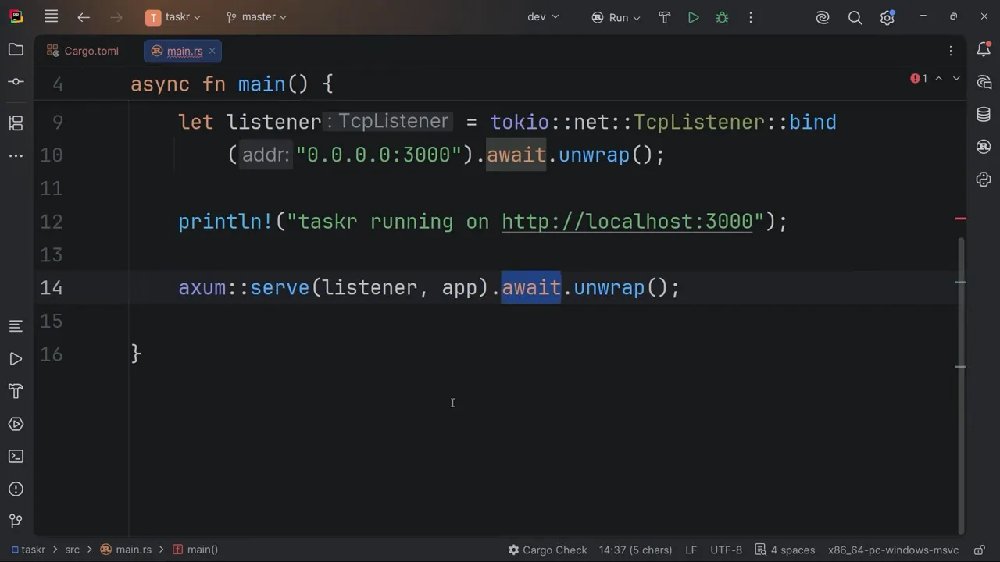
/ [GET]은 RustRover가 라우터를 읽고 붙여 준 표시예요.
영상 24:07에서 보기
강사는 특별한 trait 구현도, 매크로도, 등록 단계도 없다는 점을 강조해요. Axum은 문자열을 받으면 200 OK와 일반 텍스트로 바꿔 보내요. 실행해서 네트워크 허용 창이 뜨면 허용하고, 브라우저에서 localhost:3000을 열면 taskr is alive가 보여요. 개발자 도구의 네트워크 탭에서도 200 응답과 일반 텍스트를 확인해요.
경로 늘리기: 같은 경로, 다른 메서드
URL 하나는 데모일 뿐이고, API는 여러 URL의 지도예요. .route()를 이어 붙여 경로를 늘려요. 아래 화면 9번째 줄이 이 장의 핵심이에요. /tasks 하나에 get(list_tasks).post(create_task)가 함께 붙어 있어요.
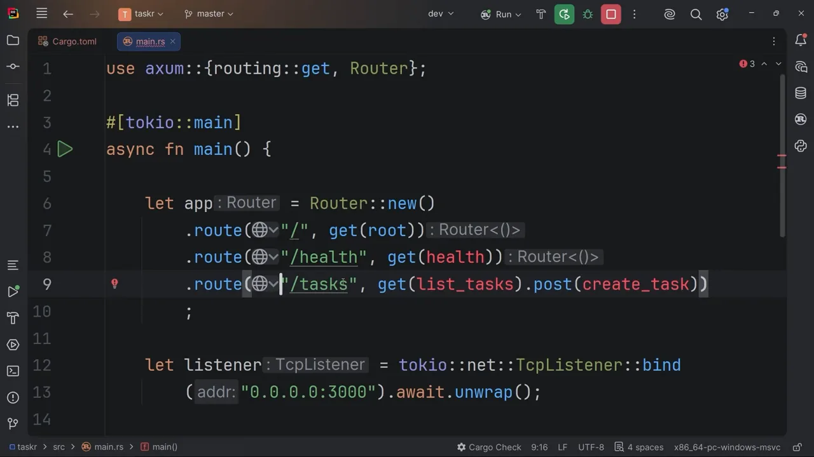
/health는 아무렇게나 지은 이름이 아니에요. 배포 플랫폼이 앱이 살아 있는지 확인하려고 두드리는 관례적인 경로라서, 대부분의 실제 API에 있어요. 안에서는 "ok"만 돌려주면 돼요. list_tasks와 create_task도 일단은 안내 문구만 돌려줘요.
POST는 브라우저로 못 보내요
서버를 다시 띄우면 브라우저로 /health와 /tasks는 확인돼요. 하지만 브라우저 주소창은 GET만 보낼 수 있어요. 그래서 RustRover의 HTTP 클라이언트를 써요. 핸들러 위 표시를 누르고 HTTP 클라이언트에서 요청 만들기를 고르면 POST 요청 파일이 생겨요. 처음엔 포트가 빠져서 실패하고, localhost:3000으로 고치면 응답이 와요.
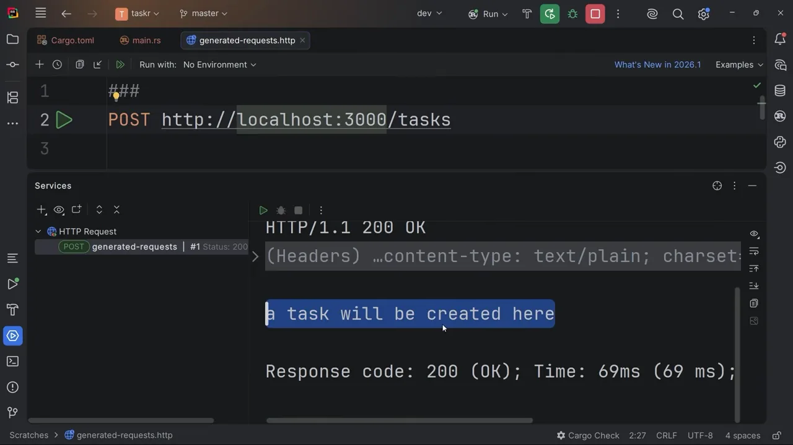
강사는 이 파일에 설정, 데코레이터, 등록 같은 게 하나도 없다는 점을 다시 짚어요. 라우터는 메서드 호출로 만든 값일 뿐이에요. 다만 지금은 모든 요청에 같은 답을 하니, 강사 말로는 "아주 자신만만한 거짓말쟁이"예요.
추출기로 URL 읽기
실제 API는 구체적인 질문에 답해야 해요. "4번 할 일", "끝난 할 일만", "할 일 2페이지" 같은 것들이에요. 이 장에서는 URL에서 값을 꺼내 타입이 정해진 Rust 변수로 받아요. 강사가 "Axum이 이해되는 순간"이라고 부르는 추출기가 여기서 나와요.
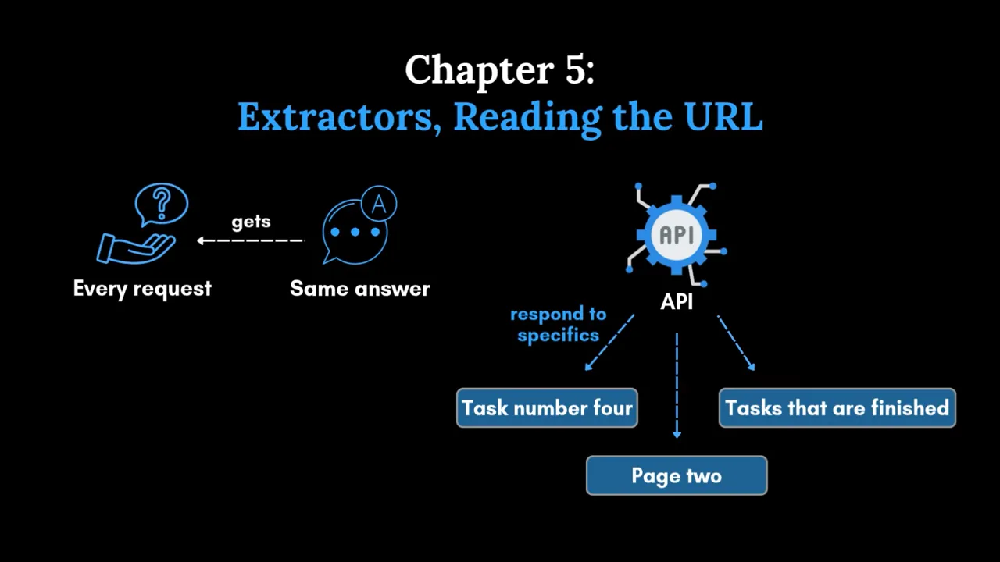
Path와 Query
axum::extract에서 Path와 Query를 가져와요. 둘은 URL의 다른 부분을 읽어요.
| 추출기 | 읽는 곳 | URL 예 | 영상에서 받은 타입 |
|---|---|---|---|
Path | 경로 조각 | /tasks/10 | Path<u32> |
Query | ? 뒤의 키=값 | /tasks?done=true | Query<HashMap<String, String>> |
경로 파라미터는 라우터에 중괄호로 자리를 만들어요. 아래 화면 15번째 줄의 .route("/tasks/{id}", get(get_task))가 그 모습이에요. {id} 자리에 1, 2, 3 무엇이 오든 이 경로로 들어와요.
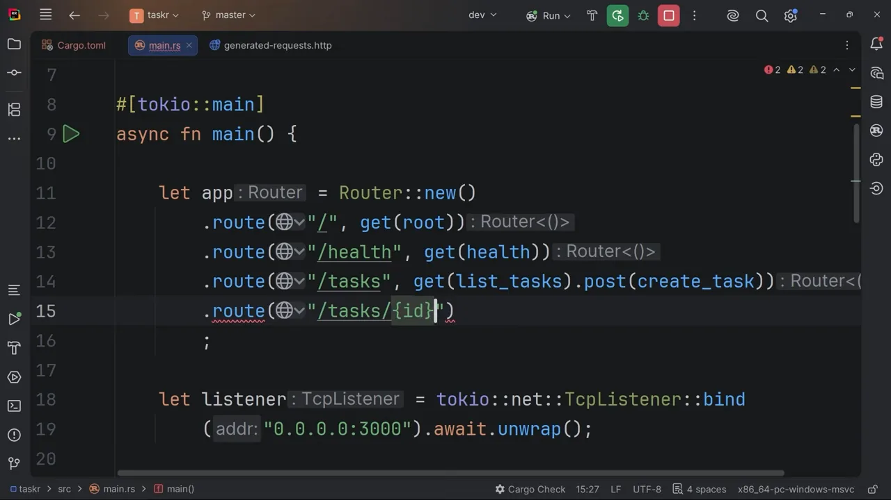
핸들러 쪽은 인자를 Path(id): Path<u32>로 적어요. 화면 위쪽에 RustRover가 붙인 /tasks/{id} [GET] 표시도 보여요.
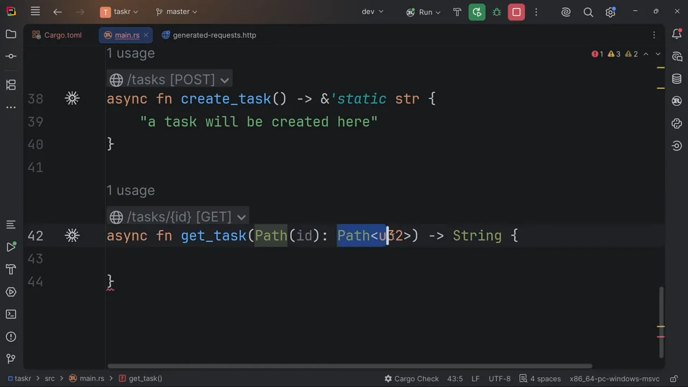
이렇게 핸들러 인자 목록에 "요청의 이 부분을 주세요"라고 적는 타입을 추출기라고 해요. Axum은 그 인자를 보고 요청에서 해당 부분을 꺼내, 이미 파싱한 상태로 넘겨줘요. 왼쪽의 Path(id)는 구조 분해 문법이에요. Path라는 포장을 그 자리에서 벗겨서, 함수 안에서 id는 그냥 u32가 돼요. 돌려줄 문자열은 format!("you asked for task {}", id)로 만들어요. println!이 화면에 찍는다면 format!은 같은 방식으로 문자열을 만들어 돌려줘요.
타입이 곧 검증
누군가 /tasks/banana를 요청하면 banana를 u32로 바꿀 수 없어요. 그러면 Axum이 400을 돌려보내고, get_task는 아예 실행되지 않아요. 아래 화면이 그 결과예요. 왼쪽 본문에 Invalid URL: Cannot parse "banana" to a u32, 오른쪽 네트워크 탭의 상태 칸에 400이 찍혀 있어요.
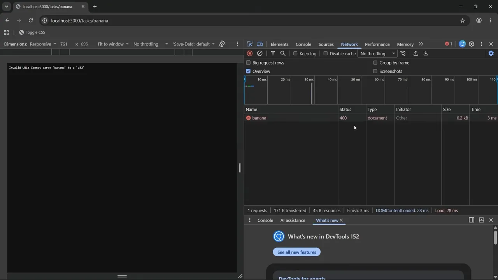
강사는 이걸 "타입 시그니처가 곧 검증"이라고 표현해요. 잘못된 입력은 함수 안 로직에 닿을 수조차 없어요. 아래 그림은 이 장과 다음 장에서 나오는 추출기 실패를 한데 모은 거예요.
쿼리 파라미터 처리
list_tasks는 Query(params): Query<HashMap<String, String>>로 받아요. HashMap은 키와 값 쌍의 모음이라 쿼리의 자연스러운 모양이에요. 모든 값을 문자열로 받는 가장 느슨한 형태이고, 강사는 나중엔 구조체로 바꾸게 된다고 해요.
아래 화면의 36~38번째 줄이 쿼리를 읽는 공식이에요. params.get("done")은 키가 없을 수도 있으니 Option을 돌려줘요. 그래서 map_or로 두 경우를 처리해요. 없으면 첫 번째 값 "everything", 있으면 그 값을 format!("done={}", v)로 바꿔요.
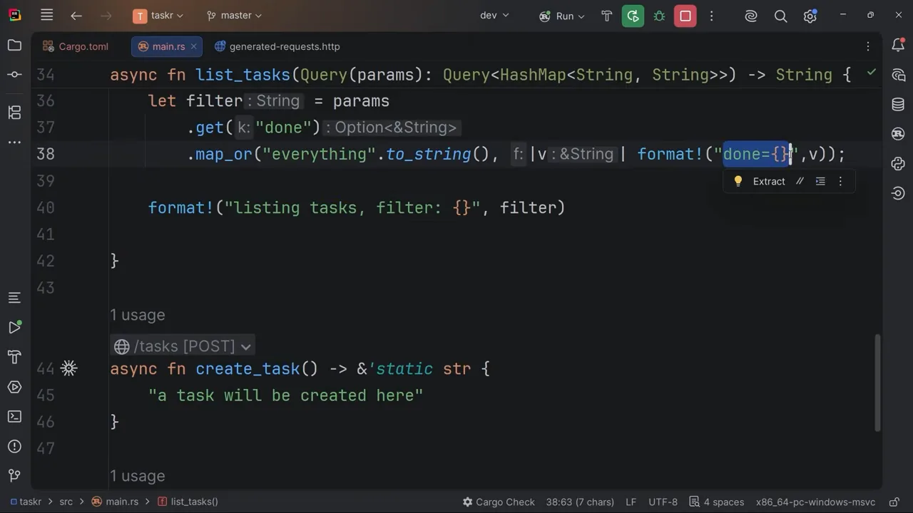
브라우저로 확인하면 /tasks는 filter: everything, /tasks?done=true는 filter: done=true가 나와요. 아직 값을 검사하지 않아서 done에 아무 값이나 넣어도 그대로 나와요. 키 이름이 다르면(random=true) get("done")이 실패해서 다시 everything이에요. /tasks/10처럼 슬래시와 경로를 붙이면 이 핸들러가 아니라 /tasks/{id} 쪽으로 가요.
JSON 주고받기
지금까지 taskr는 일반 텍스트로만 답했어요. 실제 클라이언트는 양쪽 모두 JSON으로 말해요. 이 장에서는 할 일의 모양을 정하고, 서버가 처음부터 아는 할 일 몇 개를 넣고, JSON으로 주고받는 엔드포인트를 만들어요. 강사는 지난 장과 같은 추출기 생각을 URL 대신 요청 본문에 쓰고, 나갈 때는 그 반대로 바꾸는 거라고 요약해요.
할 일의 모양 정하기
serde에서 Serialize와 Deserialize를 가져와요. 둘은 trait, 즉 타입이 가질 수 있는 능력 묶음이에요. 직렬화는 구조체를 JSON으로 바꾸는 것, 역직렬화는 JSON을 구조체로 바꾸는 거예요. #[derive(...)]로 표시만 하면 serde가 변환 코드를 만들어 줘서, 파싱이나 포맷 코드를 손으로 쓸 일이 없어요.
아래 화면에 구조체 두 개와 시드 함수가 다 보여요. 위의 Task는 숨겨져 있고, 16번째 줄부터 CreateTask, 21번째 줄부터 seed_tasks()가 있어요.
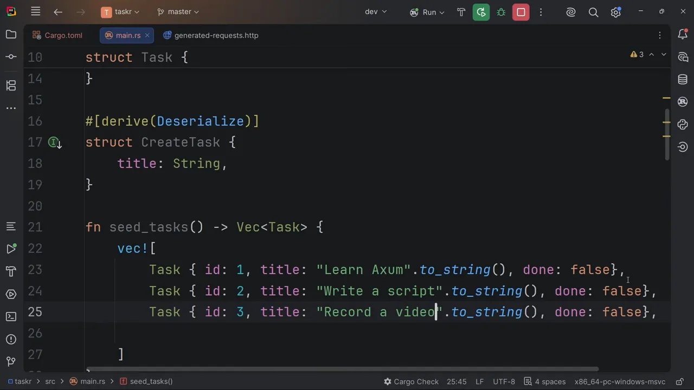
CreateTask에는 title만 있어요. 사용자가 정할 수 있는 건 제목뿐이에요.
영상 49:15에서 보기
| 구조체 | 필드 | derive | 왜 |
|---|---|---|---|
Task | id, title, done | Serialize, Clone | JSON으로 내보내고, 원본을 넘기지 않고 복사본을 나눠 주려고요 |
CreateTask | title | Deserialize | 사용자가 보낸 JSON을 받아요. id는 서버가 정하고 done은 처음엔 항상 false예요 |
저장소는 아직 없어요. 대신 seed_tasks()가 vec![...]로 할 일 세 개를 돌려줘요. Vec은 늘어나는 목록이고, vec!은 그 목록을 만드는 매크로예요. 강사는 하드코딩한 시작 데이터를 시드 데이터라고 부르고, 저장 코드 한 줄 없이 읽기 엔드포인트를 모두 만들고 시험할 수 있는 쓸모 있는 요령이라고 해요. id는 겹치지 않게 넣어요.
JSON으로 내보내기
http::StatusCode와 Json도 가져와요. Json은 추출기이면서 응답 타입이기도 해요. list_tasks의 반환 타입을 Json<Vec<Task>>로 바꾸고 Json(seed_tasks())를 돌려줘요. 감싸면 두 가지가 일어나요. 응답 헤더 Content-Type이 application/json이 되고, 목록이 직렬화돼 JSON 배열이 돼요.
아래 화면 왼쪽 본문이 세 할 일의 JSON 배열이에요. 오른쪽 헤더에서 Status Code 200 OK와 Content-Type: application/json을 확인할 수 있어요.
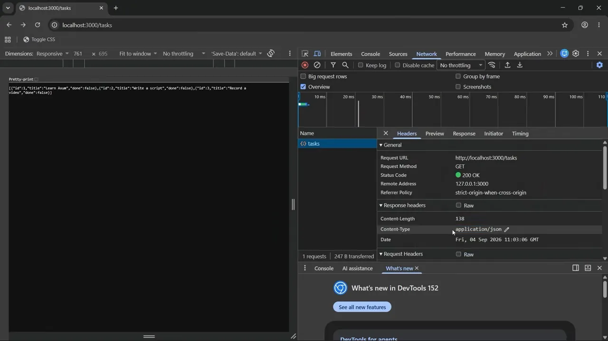
Json 감싸기로 끝났어요.
영상 52:15에서 보기
하나만 찾기: 없으면 404
get_task는 이제 진짜로 할 일을 찾아요. 아래 화면 66~70번째 줄의 체인 하나가 전부예요.
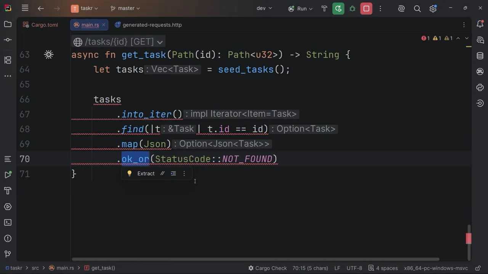
into_iter()— 목록을 하나씩 돌며 소유한 할 일을 꺼내요.find(|t| t.id == id)— id가 같은 할 일을 찾아요. 결과는Option<Task>예요.map(Json)—Some이면 안쪽 값을Json으로 감싸요.ok_or(StatusCode::NOT_FOUND)—Option을Result로 바꿔요.Some은Ok,None은 404Err예요.
반환 타입은 Result<Json<Task>, StatusCode>예요. Axum은 양쪽 모두 응답으로 바꿀 줄 알아서, 어느 쪽도 뒷전이 되지 않아요. 1, 2, 3번은 JSON으로 나오고, 없는 4번을 요청하면 아래처럼 404가 나와요. 너무 큰 숫자를 넣으면 u32에 담을 수 없다는 메시지가 나와요.
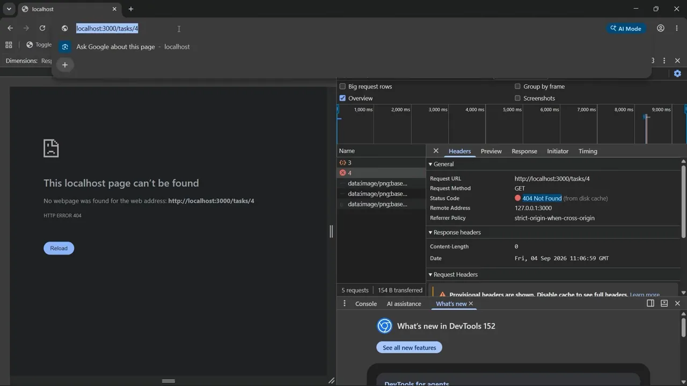
JSON 받기: 만들기
create_task는 Json(payload): Json<CreateTask>로 본문을 받아요. Path와 똑같은 추출기예요. 요청 본문을 읽어 JSON으로 파싱하고 CreateTask를 만들어요. 본문이 올바른 JSON이 아니거나, title이 빠졌거나, 문자열 대신 숫자면 함수가 실행되지 않아요. 강사는 이때 Axum이 422로 거절한다고 설명해요. 함수 안에 들어온 payload는 이미 올바른 모양이라 payload.title을 바로 써도 실패할 일이 없어요.
아직 번호를 셀 곳이 없어서 id는 99로 고정하고, done은 false로 둬요. 돌려줄 땐 (StatusCode::CREATED, Json(task))처럼 상태 코드와 JSON을 짝으로 돌려줘요. 돌려주는 건 CreateTask가 아니라 모든 필드를 가진 Task예요.
HTTP 클라이언트로 POST할 때 두 가지를 챙겨요. Content-Type: application/json 헤더를 넣고, 헤더와 본문 사이에 빈 줄을 꼭 둬요. 빈 줄이 없으면 본문이 없는 요청으로 읽혀요. 보내면 아래처럼 201 Created가 와요.
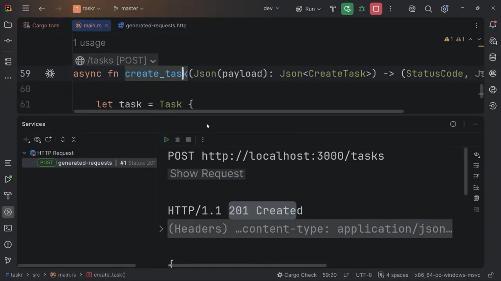
StatusCode::CREATED가 그대로 201로 나갔어요.
영상 58:58에서 보기
응답 본문을 열면 보낸 제목에 서버가 정한 id 99와 done: false가 붙어 있어요.
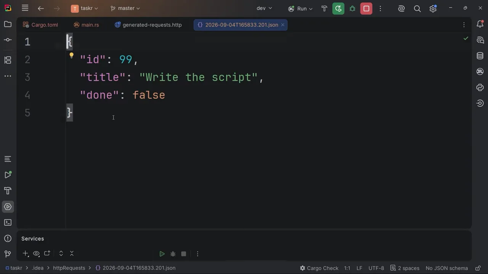
그런데 방금 만든 할 일은 목록을 다시 불러도 없어요. 요청마다 시드 목록을 새로 만들고 버리기 때문이에요. 타입도, JSON도, 경로도 맞지만 앱에 기억이 없어요. 이게 다음 장에서 고칠 마지막 문제예요.
파일 나누기와 공유 상태
남은 문제는 두 가지예요. 모든 코드가 한 파일에 있다는 것, 그리고 taskr가 아무것도 기억하지 못한다는 거예요. 강사는 지금 main.rs가 타입, 시드 데이터, 핸들러, 라우팅, 시작 코드가 그냥 쌓인 덩어리라서, 다음 기능을 어디에 넣을지부터 막힌다고 해요.
실제 Axum 프로젝트처럼 나누기
RustRover에서 Rust 파일을 새로 만들면 모듈에 붙일지 물어요. 붙이기를 고르면 main.rs에 mod models; 같은 줄이 자동으로 들어가요. 아래 화면 왼쪽 트리가 다 나눈 결과예요. src 아래 handlers 폴더(mod.rs, tasks.rs)와 main.rs, models.rs, routes.rs, state.rs가 보여요.
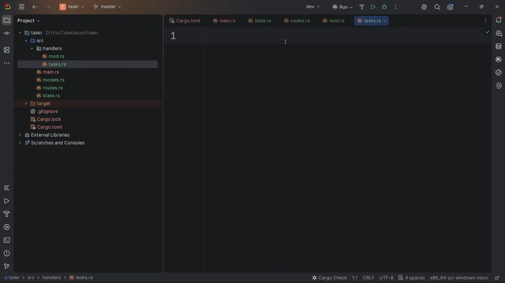
| 파일 | 맡은 일 |
|---|---|
main.rs | 상태 만들기, 앱 만들기, 포트 잡기, 서빙하기 |
models.rs | Task, CreateTask, UpdateTask 구조체 |
state.rs | 앱 전체가 공유하는 AppState |
routes.rs | URL 지도만 |
handlers/mod.rs | 폴더 안에 무엇이 있는지 선언(pub mod tasks;) |
handlers/tasks.rs | CRUD(Create, Read, Update, Delete) 핸들러 다섯 개 |
models.rs: pub과 UpdateTask
구조체를 다른 파일에서 쓰려면 공개해야 해요. 구조체에 pub을 붙여도 필드는 여전히 비공개라서, 필드 하나하나에도 pub을 붙여요. 아래 화면 16~19번째 줄이 새로 추가한 UpdateTask예요.
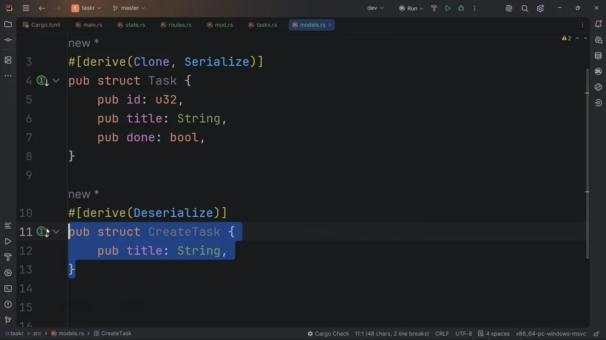
Option이에요. 제목만, 완료 여부만, 둘 다 바꿀 수 있어요.
영상 01:03:09에서 보기
완료 여부만 바꾸고 싶은데 제목까지 보내게 할 수는 없어요. Option이면 "보내지 않음"을 None으로 표현할 수 있어요. 강사는 특별한 경우나 마법 같은 값 없이 정확히 모델링한다고 설명해요.
state.rs: Arc와 Mutex
강사가 이 프로그램에서 가장 어렵다고 꼽는 파일이에요. use crate::models::Task;의 crate는 이 프로젝트의 뿌리예요. 뿌리에서 models 모듈로 들어가 Task를 꺼낸다는 뜻이에요.
아래 화면 6~7번째 줄이 공유 상태의 정체예요. tasks는 Arc<Mutex<Vec<Task>>>, next_id는 Arc<Mutex<u32>>이고, 구조체 위에 #[derive(Clone)]이 있어요.
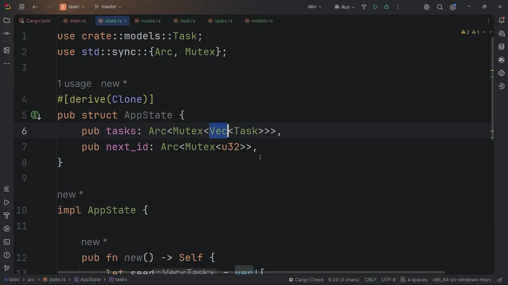
- Arc — Atomically Reference Counted의 줄임말이에요. 원래 Rust는 값의 주인이 하나뿐인데, Arc는 여러 주인이 값 하나를 안전하게 나눠 갖게 해 줘요. 강사는 "소유권 규칙의 비상구"라고 불러요.
- Mutex — mutual exclusion(상호 배제)이에요. 한 번에 한 쪽만 데이터를 고칠 수 있고, 나머지는 차례를 기다려요.
#[derive(Clone)]— Axum이 요청마다 상태를 복제하기 때문에 필요해요. Arc를 복제하면 카운터만 하나 올라가고 실제 데이터는 복사되지 않아서 비용이 거의 없어요.
impl AppState 안의 pub fn new() -> Self가 6장의 시드 데이터를 넣어 상태를 만들어요. 차이는 이게 요청마다가 아니라 서버가 시작할 때 한 번만 만들어진다는 거예요. 그래서 데이터가 남아요.
handlers/mod.rs와 routes.rs
폴더는 저절로 모듈이 되지 않아요. handlers/mod.rs에 pub mod tasks; 한 줄을 써서 "여기 공개된 tasks.rs가 있다"고 알려요.
routes.rs에는 URL 지도를 함수 app(state: AppState) -> Router 하나로 옮겨요. 아래 화면 10~13번째 줄을 보면 /tasks/{id} 하나에 GET, DELETE, PATCH 세 메서드가 이어져 있어요.
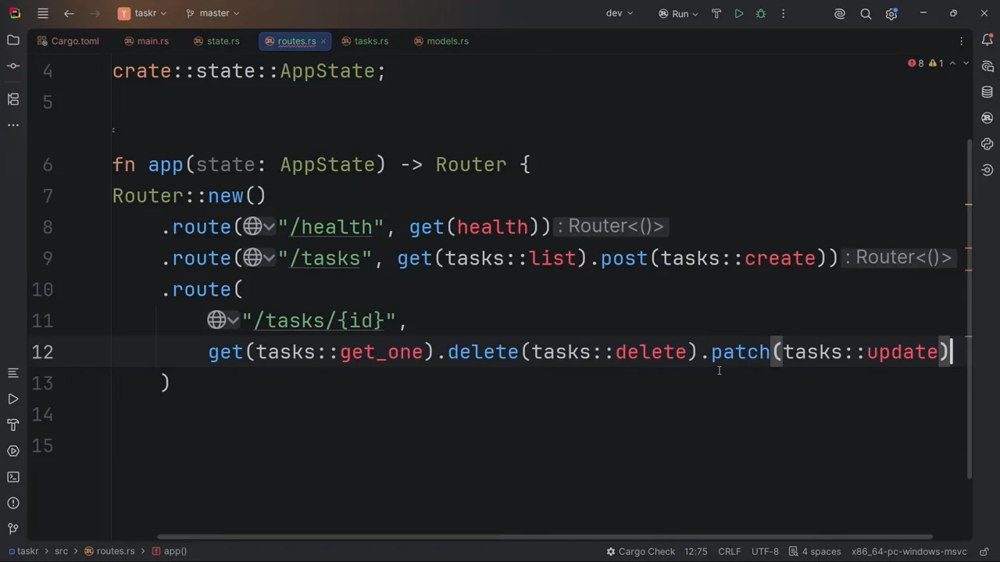
마지막에 .with_state(state)를 붙여요. 아래 화면 14번째 줄이에요. 이걸 부르기 전까지 라우터는 완성되지 않은 상태예요. 상태가 빠졌다는 걸 컴파일러가 알기 때문에 서버를 띄우지 못하게 막아요.
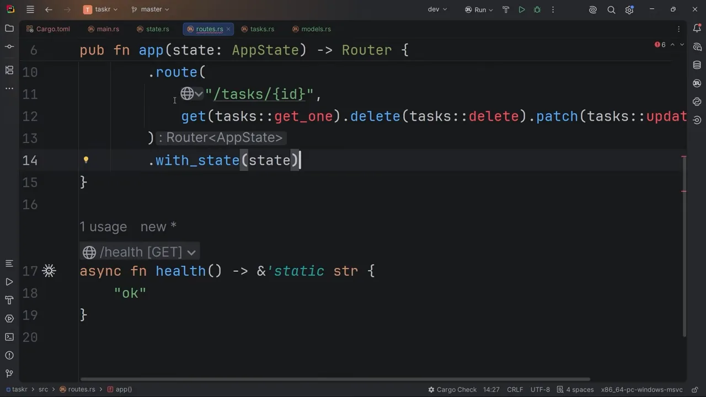
with_state를 지우고 실행하면 컴파일 오류가 나요.
영상 01:09:49에서 보기
main.rs는 네 줄로 읽혀요
구조체는 models로, 시드는 state로, 핸들러와 라우팅은 각자 파일로 옮겼어요. main.rs에는 아래 화면처럼 네 단계만 남아요. 11번째 줄에서 상태를 만들고, 13번째 줄에서 앱을 만들고, 15번째 줄에서 포트를 잡고, 20번째 줄에서 서빙해요.
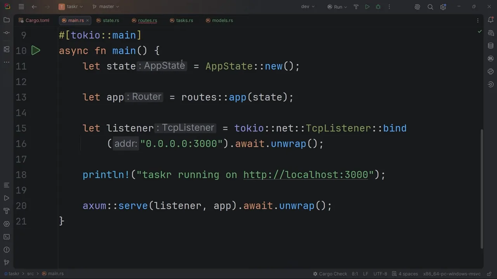
CRUD 핸들러 다섯 개와 테스트
이제 handlers/tasks.rs에 CRUD 핸들러 다섯 개를 써요. 맨 위에서 extract::{Path, State}, http::StatusCode, Json, 그리고 crate::models의 세 구조체와 crate::state::AppState를 가져와요. 모든 핸들러는 첫 인자로 State(state): State<AppState>를 받아요. State는 공유 데이터를 꺼내 주는 추출기예요.
| 메서드 · 경로 | 핸들러 | 받는 것 | 성공 | 실패 |
|---|---|---|---|---|
GET /tasks | list | State | 200, 목록 JSON | — |
POST /tasks | create | State, Json<CreateTask> | 201, 새 할 일 | — |
GET /tasks/{id} | get_one | State, Path<u32> | 200, 할 일 | 404 |
PATCH /tasks/{id} | update | State, Path<u32>, Json<UpdateTask> | 200, 고친 할 일 | 404 |
DELETE /tasks/{id} | delete | State, Path<u32> | 204 | 404 |
create: 잠그고, 번호 매기고, 넣기
state.tasks.lock().unwrap()으로 잠금을 잡아요. 그 순간부터 잠금이 풀릴 때까지는 이 요청만 데이터를 만져요. next_id도 같은 방식으로 잡아요. 잠금이 돌려주는 건 숫자 자체가 아니라 감싼 가드라서, *next_id처럼 별표를 붙여 안의 u32를 꺼내요.
아래 화면 24~27번째 줄이 마무리예요. *next_id += 1로 다음 번호를 올리고, 목록에는 task.clone()을 넣고, 원본은 (StatusCode::CREATED, Json(task))로 돌려줘요.
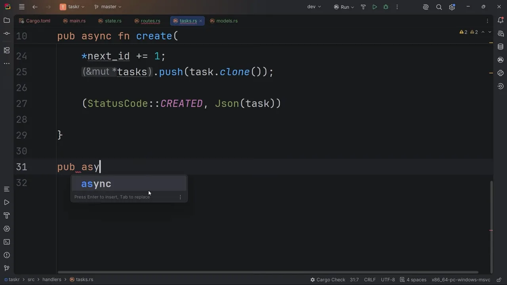
push(task)로 넣으면 값이 목록으로 옮겨 가서 응답에 쓸 수 없어요. 그래서 복사본을 넣어요.
영상 01:15:30에서 보기
get_one: 찾아서 복사본 돌려주기
6장의 get_task와 거의 같아요. 다른 점은 목록이 공유 상태에 있다는 거예요. 화면 38~42번째 줄처럼 iter().find(...)로 찾고, 공유 목록 속 원본을 내줄 수는 없으니 Json(t.clone())으로 복사본을 감싸요. 새 번호가 필요 없으니 next_id는 잠그지 않아요.
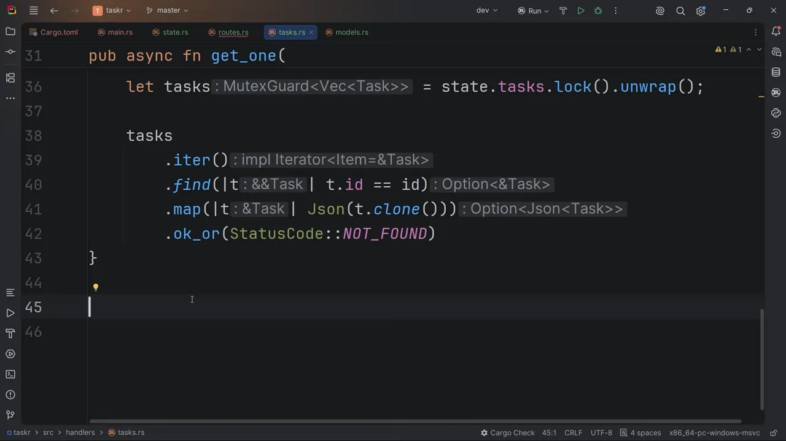
map(Json)이 map(|t| Json(t.clone()))로 바뀐 게 6장과의 차이예요.
영상 01:17:00에서 보기
update: 보낸 필드만 덮어쓰기
update는 PATCH에 연결해요. PATCH는 데이터의 일부만 바꾸는 방식이라 UpdateTask의 필드가 Option이었어요. 강사는 데이터 전체를 바꾸는 메서드였다면 달랐을 거라고 해요. 인자는 State, Path, Json<UpdateTask> 세 개라서 create와 get_one을 섞은 모양이에요.
아래 화면 52~55번째 줄에서 두 가지를 봐요. 고칠 거라서 iter() 대신 iter_mut()를 써요. 그리고 ok_or(StatusCode::NOT_FOUND)? 끝의 물음표가 있어요. 57번째 줄부터는 if let Some(title) = payload.title로 제목을 보냈을 때만 바꿔요.
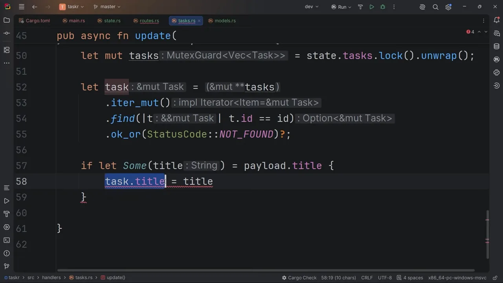
? 한 글자가 "못 찾으면 여기서 404로 끝내기"예요.
영상 01:20:00에서 보기
? 연산자는 값이 오류면 함수 전체에서 즉시 그 오류를 돌려주고, 정상이면 안을 꺼내 계속 진행해요. 실패 시 일찍 돌아가기를 한 글자로 쓴 셈이에요. 그 아래 done도 같은 방식으로 처리하고, 끝에 Ok(Json(task.clone()))을 돌려줘요.
delete: 길이로 성공 판단
지우기 전에 let before = tasks.len();로 길이를 재요. 그다음 retain(|t| t.id != id)을 돌려요. retain은 조건이 참인 항목만 남기니까, 요청한 id만 빠져요.
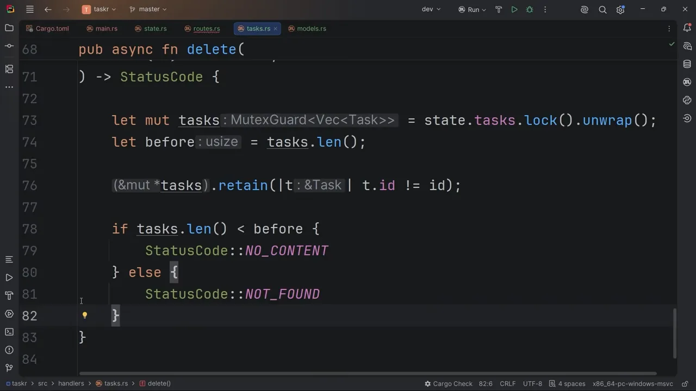
삭제는 돌려줄 데이터가 없으니 반환 타입이 StatusCode 하나예요. 204 No Content는 실패가 아니라 "성공했고 돌려줄 내용이 없음"이라는 뜻이에요.
마지막으로 라우터가 list가 없다고 오류를 내서 추가해요. Json(tasks.clone())을 돌려주는 간단한 함수예요. 복사본을 만들고 나면 잠금은 바로 풀려요.
요청을 차례로 돌려 보기
강사는 미리 만든 HTTP 요청 파일을 위에서부터 하나씩 실행해요. 순서는 이래요.
- 시드 목록 조회 — GET
/tasks. id 1, 2, 3 세 개와 200 OK - 새로 만들기 — POST
/tasks, 본문{"title": "ship part two"}. 201 Created, id 4 - 다시 조회 — 상태를 공유하니 목록 끝에 4번이 붙어 있어요.
- 완료 표시 — PATCH
/tasks/4, 본문{"done": true}. 제목은 그대로, done만 true - 지우기 — DELETE
/tasks/1. 204 No Content - 마지막 조회 — 1번은 사라지고, 4번은 완료 상태예요.
아래 화면이 2번 단계의 결과예요. 오른쪽 응답에 HTTP/1.1 201 Created와 "id": 4, "done": false가 보여요. id가 99가 아니라 4인 건 이제 next_id가 번호를 세기 때문이에요.
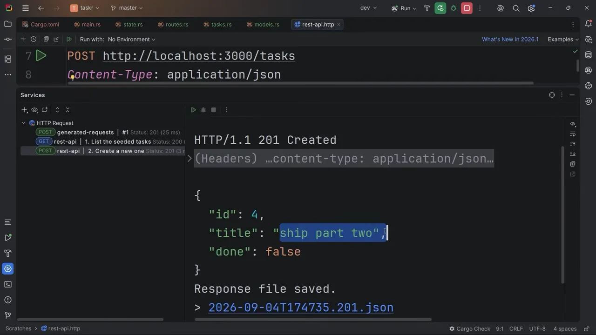
4번 단계의 요청 파일에는 주석이 달려 있어요. PATCH라서 바꿀 필드만 보내고 제목은 건드리지 않는다는 내용이에요. 본문은 "done": true 한 줄뿐이에요.
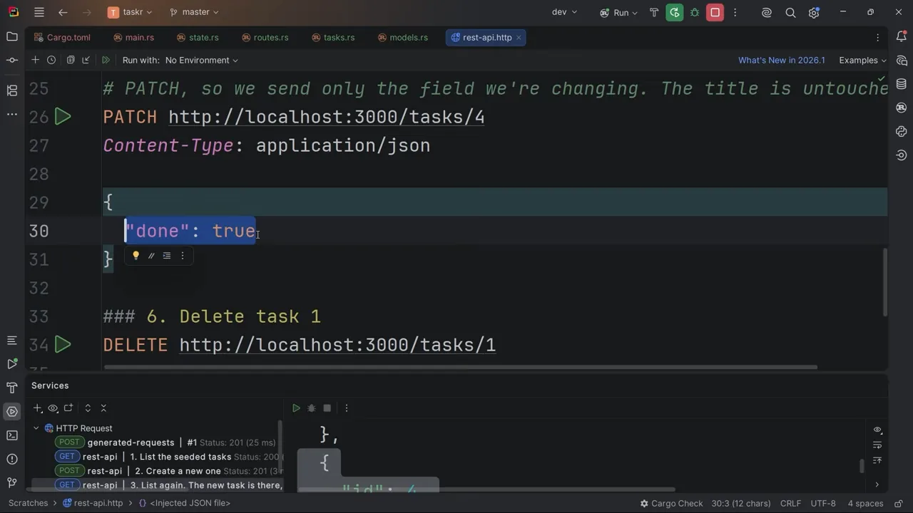
UpdateTask의 title은 None으로 들어와서 그대로 남아요.
영상 01:25:12에서 보기
그다음 요청이 6번 DELETE /tasks/1과 7번 마지막 조회예요. 아래 응답 칸에는 바로 앞 단계에서 완료로 바뀐 4번 ship part two가 보여요.
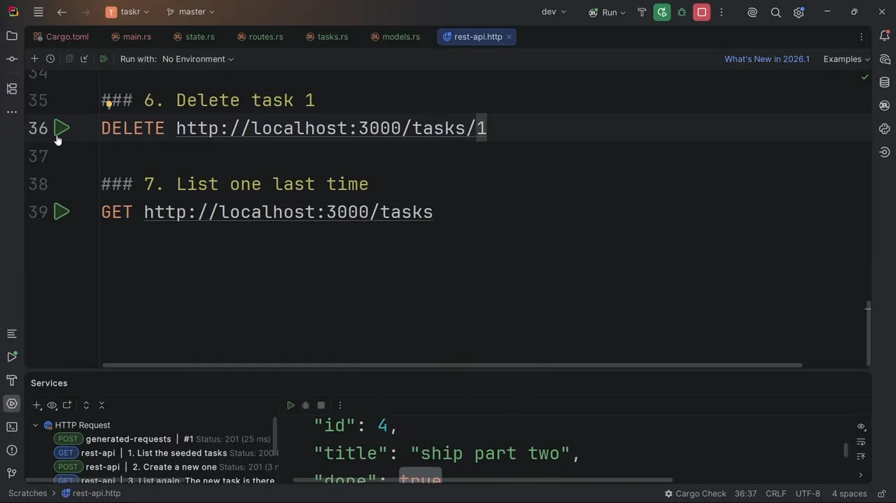
무엇을 배웠고, 다음은
강사는 정리하며 이렇게 짚어요. 구조체를 만들 줄 알고, 소유권의 기본을 알고, null과 예외 대신 Option과 Result가 있는 이유를 알아요. 라우터는 메서드 호출로 만든 값이고, 핸들러는 그냥 async 함수예요. 원하는 걸 인자 목록에 적으면 되고, 요청이 맞지 않으면 코드는 실행되지 않아요.
2편에서 다루겠다고 한 주제는 이래요. 상태 코드 대신 제대로 된 에러 타입, 미들웨어와 Tower 생태계, 모든 요청의 구조화된 로깅, 요청 검증, 우아한 종료(graceful shutdown), 메모리 저장소를 실제 데이터베이스로 바꾸기예요.